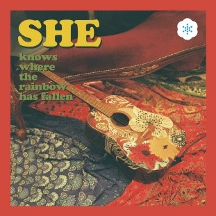
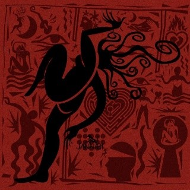
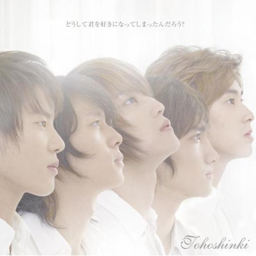
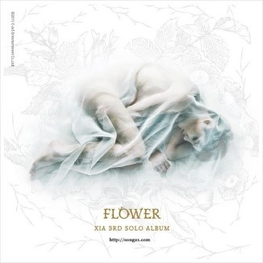
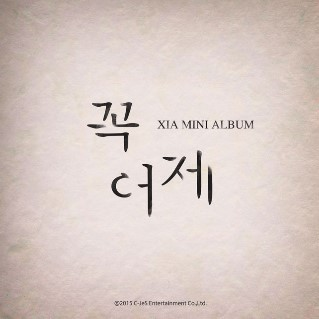
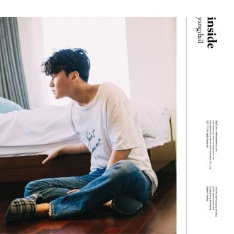
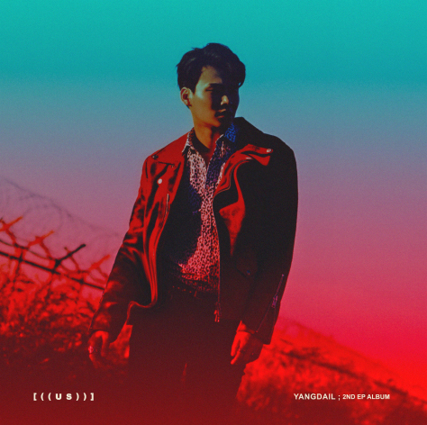

잔나비
잔나비는 리더이자 보컬인 '최정훈', 기타 '김도형', 키보드 '유영현', 드럼 '윤 결', 베이스 '장경준'이라는 다섯 명의 잔나비 띠 친구들(92년생)이 모인 인디밴드로, 빈티지 팝을 추구하는 밴드이다. 위 영상은 잔나비의 첫 정규앨범인 ‘MONKEY HOTEL’의 타이틀곡이다. 잔나비 노래에 드러나는 옛 감성과 사운드가 대중적인 음악과는 다르다. 그 감성이 잔나비를 기억하게 만들고 감성을 자극한다.노래 추천
잔나비 노래 중 추천하는 곡들은 ‘뜨거운 밤은 가고 남은 건 볼품없지만’, ‘SHE’, ‘사랑하긴 했었나요 스쳐가는 인연이었나요 짧지 않은 우리 함께했던 시간들이 자꾸 내 마음을 가둬두네’이다. 한 번씩은 들어보길 바란다. 
동방신기
동방신기는 현재 정윤호, 심창민 두 멤버로 이루어져 있는 아이돌 가수이다. 어렸을 적 언니와 함께 동방신기를 응원했다. 언니 덕에 동방신기라는 그룹을 알게 되었고, 내가 살아가는데 어느 한 부분을 일깨워 주기도 한 가수이다. 위 영상은 동방신기가 콘서트 중 부른 '믿기 싫은 이야기'라는 곡이다. 믿기 싫은 이야기의 곡은 동방신기가 3명이 탈퇴를 하고 1년 6개월 만에 정규앨범으로 컴백하고 나온 곡이다. 그래서 그런지 이 곡의 가사를 들어보면 동방신기 전 5명이었을 때를 그리워하고 있다는 말로 얘기가 많았던 곡이다.동방신기는 2003년 12월 26일에 데뷔한 가수이고 처음에는 영웅재중, 유노윤호, 시아준수, 믹키유천, 최강창민 5명이서 데뷔했지만 2009년에 영웅재중, 시아준수, 믹키유천이 노예계약이라며 SM에 소송하며 탈퇴를 했다. 현재 유노윤호, 최강창민 두 명이 동방신기이고 ‘운명’이라는 곡으로 열렬히 활동을 이어나가고 있다.
노래 추천
동방신기 노래 중 추천해주고 싶은 노래는 ‘love in the ice’, ‘begin’, ‘믿기 싫은 이야기’이다. begin은 동방신기의 일본 곡이다. 하지만 begin은 발라드 곡인데 가사와 음이 정말 좋다. 또한 동방신기의 화음이 잘 어우러져있어서 듣기 좋은 곡이다.
김준수
김준수는 2003년 '동방신기' 그룹으로 데뷔하고 그룹 'JYJ'활동을 하고 현재는 솔로 뮤지션으로서 자신의 꿈을 이어가고 있는 가수 겸 뮤지컬 배우이다. 나는 개인적으로 자신의 직업에서 열심히 노력하고 잘하는 사람들을 좋아한다. 그중 김준수가 내 생각에 제일 근접하다. 그래서 더 좋아하게 되었다. 김준수의 노래를 항상 정직하고, 올곧으며, 진심이 듬뿍 담겨있다. 위의 영상은 김준수가 EBS 스페이스 공감 방송에서 부른 '나비'이다. 나비라는 곡은 김준수의 친 형인 김준호가 작사한 곡인데 이 가사가 주옥같다. 가끔 자신이 삶을 살아가다가 인생의 회의감을 느꼈을 때, 무기력할 때, 힘들 때 내가 무엇을 위해 살아가고 있었을까 이런 생각이 들 때가 있다. 하지만 다시 한 걸음 한 걸음 다시 일어날 수 있다는 나만의 꿈이 있고 길이 있다는 것을 깨우쳐주는 그런 곡이다.김준수는 뮤지컬계에도 진출했다. 위 사진처럼 디셈버, 드라큘라 뮤지컬뿐만 아니라 더 많은 뮤지컬을 연기해왔다. 처음에는 '모차르트!' 뮤지컬로 뮤지컬계에 발을 내밀었고 더욱더 열심히 해서 남우 주연상도 받게 되었다.
노래 추천
김준수 노래 중 추천해주고 싶은 노래는 앞서 말한 '나비', '꼭 어제', '7살'이다. 7살을 JYJ 그룹에서 'JUST US'앨범에 있는 김준수 솔로 곡이다. 일반 사람들은 잘 모를 수도 있는 곡인데 이 곡은 김준수가 작사, 작곡한 노래이고 향수를 느낄 수 있는 곡이라 할 수 있다. 한 번씩은 들어보길 바란다. 
양다일
양다일은 발라드 가수이다. 노래를 정말 잘 부르고 음색도 좋아서 좋아하게 되었다. 양다일 음악이 모두 가슴 적적한 노래, 슬픈 노래들이 많다. 그 가사에 담긴 감정들이 노래를 들을 때마다 느낄 수 있다.노래 추천
양다일 노래 중 추천하는 곡들은 ‘곁에 있는 너’, ‘너를 잊으면’, '떠나지마'등이다. 곁에 있는 너와 너를 잊으면은 ‘inside’앨범에 있는 곡들이다. 두 곡은 타이틀이 아님에도 불구하고 노래가 좋다. 이 앨범은 대부분 좋아서 한 번씩 들어보는 것도 좋을 것 같다. 